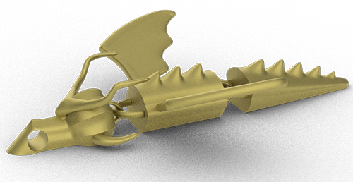
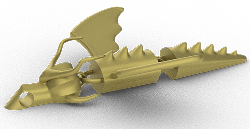
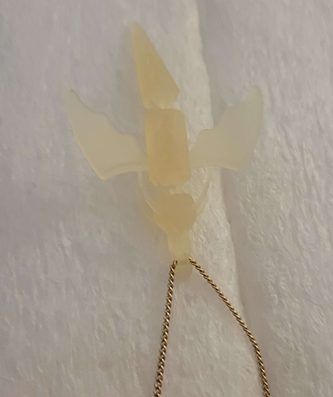
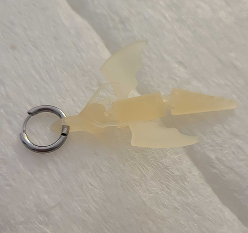
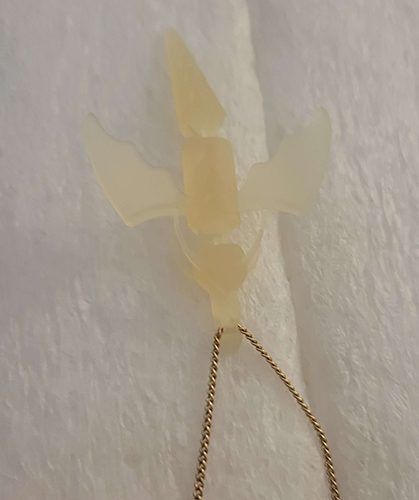
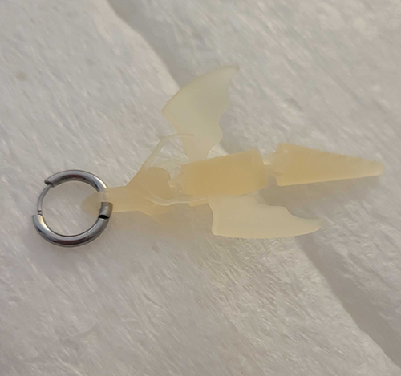

Dragon Link
Spring 2025
Rhino 3D
Challenge: Create a piece of jewelry that utilizes links and 3d print it with shapeways
process:As I sketched out ideas I came up with the idea to make it be able to be used as an earring and a necklace.
To create references for what I wanted the head of my jewelry to look like, I took some of the previous sketches I made and made vectorized versions in adobe illustrator.
The actual model for the jewelry was made using Rhino 3D’s subdivision tools, starting with the head component, working down to the tail. After a test 3d print, some adjustments were made to maximize comfort for being used as an actual piece of jewelry.
 

Once the model was finished with adjustments, it was sent to be 3d printed using shape ways 3d printing service and crystal material. Once it was received, it was tested as both an earring and neckless, which was satisfactory.
 


